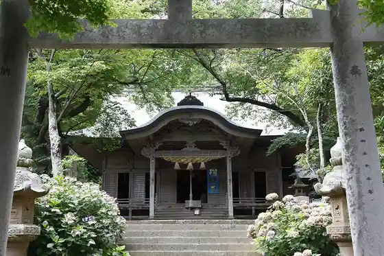
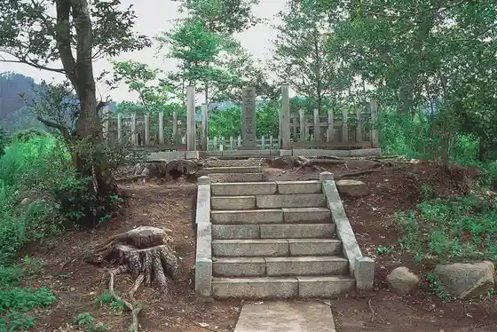
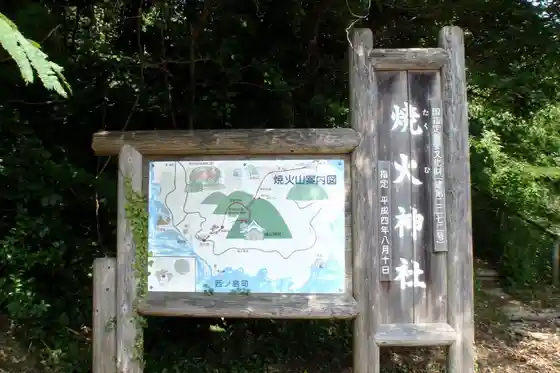

Kuniga Coast
Nishinoshima, Shimane · Official / source link
Yura Hi Onna Shrine
Nishinoshima, Shimane · Official / source link

Seirei Fune
Nishinoshima, Shimane · Official / source link
Kuroki Gosho Shi
Nishinoshima, Shimane · Official / source link

Yaki Hi Shrine
Nishinoshima, Shimane · Official / source link

Heki Kaze Kan
Nishinoshima, Shimane · Official / source link
Nishinoshima Furusato Kan
Nishinoshima, Shimane · Official / source link
Kuniga Meguri Teikikanko Fune
Nishinoshima, Shimane · Official / source link
Club no A Oki Nishinoshima B&G Kaiyo Center
Nishinoshima, Shimane · Official / source link
Nishinoshima General Park
Nishinoshima, Shimane · Official / source link
Mita Hachiman Shrine Dengaku
Nishinoshima, Shimane · Official / source link
Funehiki Unga
Nishinoshima, Shimane · Official / source link
Sotogahama Beach
Nishinoshima, Shimane · Official / source link
Kuniga Kaichu Park
Nishinoshima, Shimane · Official / source link
Mimi Ura Campground
Nishinoshima, Shimane · Official / source link
Yaki Hi Kama
Nishinoshima, Shimane · Official / source link
Minshuku San Rikimaru
Nishinoshima, Shimane · Official / source link
Nishinoshima Town Hall
Nishinoshima, Shimane · 08514-6-0101 · Official / source link